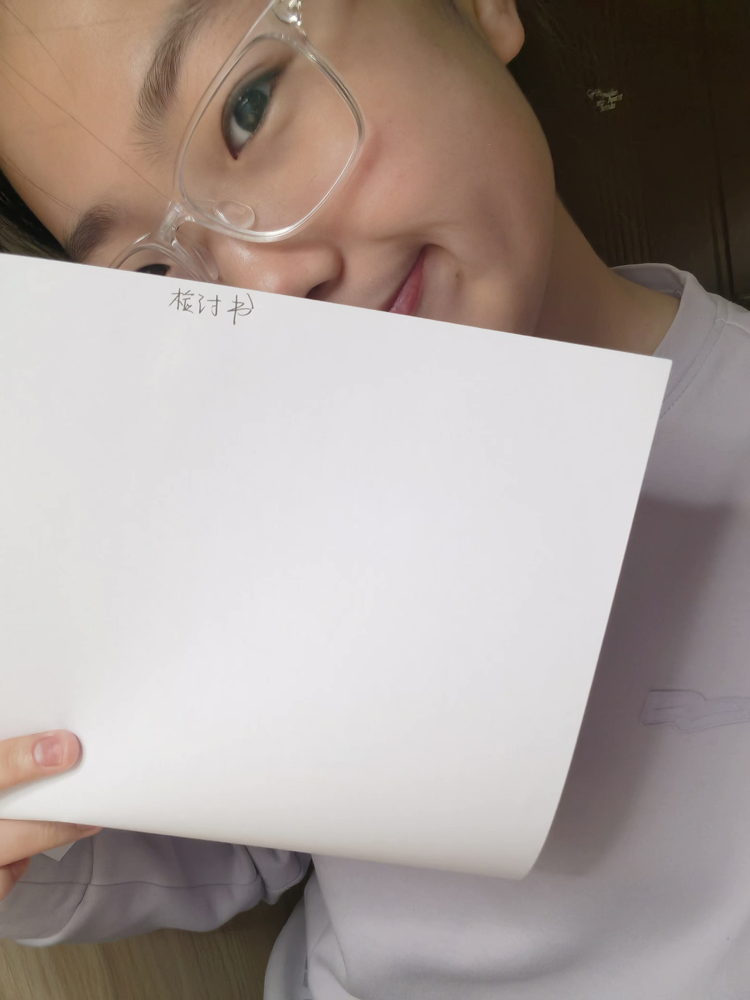
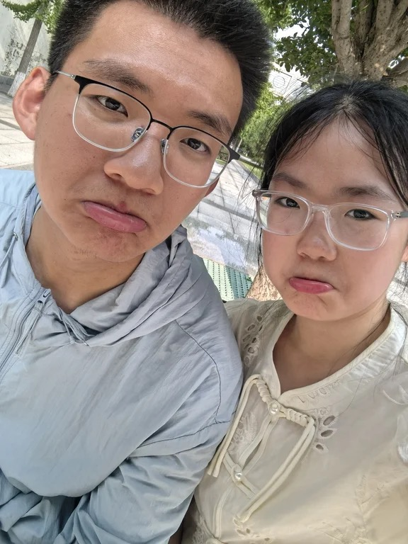

我们的回忆

第一次约会

一起犯过的错

属于我们的约定

每一个笑容

珍贵回忆

我们的成长
LOVE STORY
ONE YEAR ANNIVERSARY
2025.07.28 — 2026.07.28
一年的时间，
我们一起经历了很多。
有快乐， 有惊喜， 也有彼此陪伴的平凡日常。
谢谢你出现在我的生命里。
Days
Hours
Minutes
Seconds
第一次约会

一起犯过的错
属于我们的约定

每一个笑容
珍贵回忆
我们的成长
点击打开
第一部分：
真的很抱歉，这次的周年我准备得太仓促了。手机坏了，家里的事又把我耗得精疲力竭。这段时间，我们吵了好多次架，每一次我都后悔，后悔自己为什么不能再耐心一点，为什么不能多分一点温柔给你。是我没有尽到该尽的责任。接下来的一年，我会努力改的。但也请你，多给我一点空间，一点时间，让这个低电量的人，慢慢充一充电，好吗？
这封信写在24号的夜里。今天一整天没有理你，不是故意的。我知道你一定快要急坏了，对不起。
早上叫醒我的是他们的喊叫声。把我从床上拉起来的，是一份调停矛盾的责任感。中午，我离家出走了。大约一点半，因为我爸又喝酒了。我能理解他心里的悲痛，可酒后失态，也是不争的事实。
没有办法，我什么也没带，一个人从家走到省图书馆，又从图书馆走到你家。到的时候，已经六点半了——我问路人，才知道时间。淋了两场雨。全身都湿透了，脚上磨出了血泡。借了路人的手机打了电话，让他们接我回去。回家之后，第一时间打开电脑，想找你。发现抖音已经退登了，微信、抖音、QQ，所有社交账号都因为手机不在身边而无法登录。我用我妈的抖音关注了你，可你的私密设置让我发不了消息。一直到现在，我仍然联系不上你。
家里的风波，已经持续了近一个半月。我的心路也变了好多次。可惜我的文笔太薄，写不出那些翻涌的东西。
刚才，我妈睡下了。我爸来找我，说他要去喝两瓶啤酒。我说，不行。他什么都没说，低下头，像个孩子一样委屈地哭了出来。眼泪从鱼尾纹里渗出来，一颗一颗，分明地往下落。或许是岁月早已抽干了他的泪水，所以每一滴都落得那么慢，那么重。
我何尝不知道一个家庭的顶梁柱有多辛苦。从小到大，好东西舍不得吃，舍不得用。一条毛巾用到烂也不换，一双皮鞋往往过年才换。衣橱里能穿的就那么一两套，朴朴素素。我不在的时候，他们两个人的晚餐，大概只是挂面吧。
我何尝不知道父爱有多厚。虽然我瞧不起他的愚昧，嘴里总挂着“咱们冯家”如何如何。但后面那句——“我的一切都是你的”——才是最底气的哭喊。今夜，他就在我面前，像孩子一样哭诉着。他说他仍然深爱着我母亲，不明白她为什么要做出最底线的错事。他一遍一遍地重复：“锦锦，我难受。”我也见过他一整夜不合眼的样子。被痛苦折磨到用酒精一遍遍麻痹自己，直到胃出血。我也痛。纵使我再有性格缺陷，再不愿面对亲情，可面对生父在我面前哭泣得说不出话，痛苦得无法自理，颓废到不成样子——我的心也疼，我也想哭。
可我也知道另一个人的疼。一个女人，精神被丈夫一次次争吵折磨，失眠到无法入睡。站在自己的立场上，根本理解不了对方的行为，却要一遍遍忍受质问和愤怒。我也知道母爱是什么样子。从小到大的课外班、学习，最愁的是我妈。每次买饭，为了省钱，都让我多吃一些，自己少吃。我离家出走那天，她担心得流下眼泪。
我也想哭。因为我更知道，十七年来，我每一天都过得有多痛苦。
可是在这一刻，我没有了偏见和仇视。眼里只看见两个矛盾的人，两个可怜的、也可恨的人。两个都骗过我，都不说真话，都有巨大缺点的人。
我不知道该怎么办。因为我不知道谁真谁假。没有证据的事，我又能做什么？虽然她很可疑，可我分辨不出来。真的。
或许妈妈也哭了。或许我也哭了。或许吧。
哭完之后，他终于睡下了。这也许是这么多天来，他终于等到的一晚梦。没有痛苦，没有背叛，没有不被理解，只有幸福的梦。
她也睡下了，等到了没有惊吓，没有委屈，没有折磨的梦。
或许我也该睡了。去寻找我的一晚——没有猜疑，没有挑拨，没有压抑——能忘掉一切的梦。
晚安。
—— 冯成锦
2025.07.28
∞